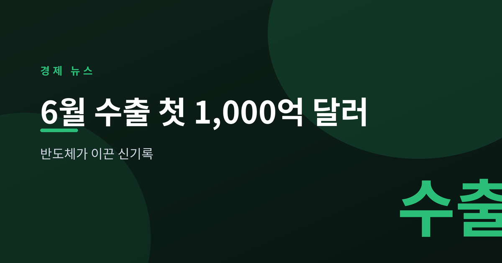
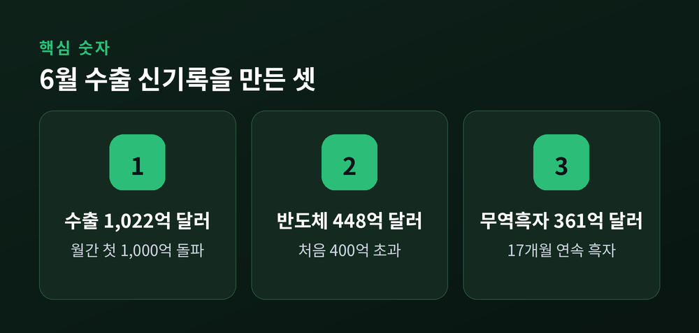
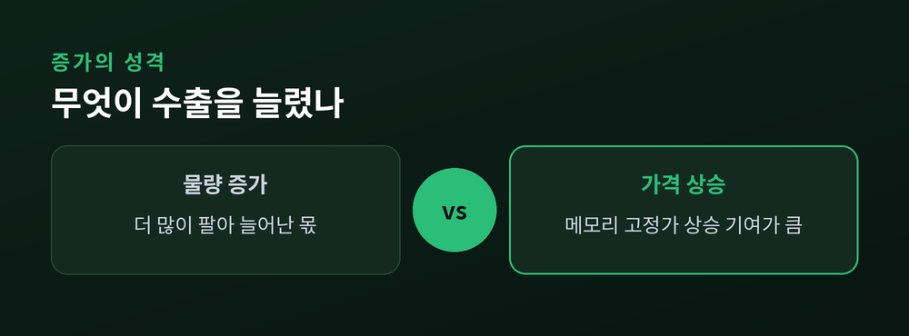
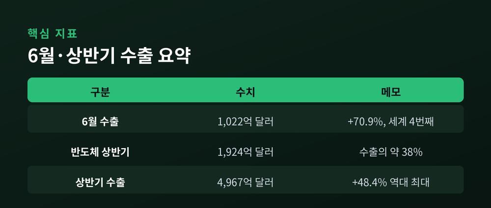

반도체가 이끈 신기록

7월 1일 산업통상자원부가 '2026년 6월 및 상반기 수출입 동향'을 발표했습니다. 월간 수출이 사상 처음 1,000억 달러를 넘었습니다. 반도체가 앞에서 끌었습니다. 오늘은 이 숫자가 무엇을 뜻하고, 왜 마냥 반갑게만 볼 수는 없는지 정리해 보겠습니다.
이 글은 정보 제공을 위한 해설이며 투자 권유가 아닙니다.
6월 수출은 1,022.5억 달러였습니다. 1년 전보다 70.9% 늘었습니다. 월간 수출이 1,000억 달러를 넘은 것은 이번이 처음입니다. 우리 수출 역사에서 한 번도 없던 고지입니다.
이 고지를 밟은 나라는 많지 않습니다. 미국, 중국, 독일에 이어 한국이 네 번째입니다. 흔히 수출 강국으로 떠올리는 일본과 대만도 아직 밟지 못한 자리입니다.
앞에서 끌어준 것은 반도체입니다. 반도체 수출이 448.2억 달러로 처음 400억 달러를 넘었습니다. 증가율은 199.5%, 1년 만에 약 세 배로 불었습니다. AI 인프라 투자로 수요가 몰리고, 메모리 고정가가 오른 영향입니다. 전 세계가 데이터센터를 짓는 흐름이 우리 반도체의 몸값을 밀어 올린 셈입니다.
수입도 함께 늘었습니다. 6월 수입은 661.0억 달러로 30.1% 증가했습니다. 유가와 에너지 도입 단가가 오르며 에너지 수입만 125.1억 달러에 이르렀습니다.
그래도 파는 쪽이 훨씬 컸습니다. 무역수지는 361.5억 달러 흑자로, 처음 300억 달러를 넘었습니다. 17개월 연속 흑자 행진입니다.

기록은 반갑습니다. 다만 숫자를 뜯어보면 짚을 대목도 있습니다. 좋은 성적일수록 그 안을 들여다보는 편이 낫습니다.
먼저 반도체 편중입니다. 상반기 수출의 약 38%가 반도체 한 품목에서 나왔습니다. 지난해 이 비중이 24% 안팎이었던 것과 비교하면 쏠림이 뚜렷해졌습니다. 특정 제품, 그중에서도 메모리 가격에 실적이 크게 기댄 셈입니다.
가격의 힘도 큽니다. 이번 증가는 물량보다 가격 상승 기여가 컸습니다. 예전엔 물건을 더 많이 팔아 수출이 늘었다면, 지금은 값이 오른 몫이 큽니다. 반대로 말하면, 가격이 내려갈 때는 그만큼 되돌려질 수 있다는 뜻입니다.
기저효과도 있습니다. 지난해 6월 실적이 낮았던 탓에, 올해 증가율이 더 크게 보이는 면이 있습니다. 70.9%라는 숫자를 있는 그대로만 받아들이기 어려운 이유입니다.
그렇다고 이 성과를 깎아내릴 일은 아닙니다. 흑자가 처음 300억 달러를 넘었다는 것은, 우리가 버는 돈이 쓰는 돈을 그만큼 크게 앞섰다는 뜻입니다. 다만 그 힘이 어디서 왔는지를 알아야, 이 흐름이 얼마나 오래갈지도 가늠할 수 있습니다.

상반기 성적은 역대 최고입니다. 누적 수출 4,967억 달러로 48.4% 늘었습니다. 종전 상반기 최고 기록을 큰 폭으로 넘어섰습니다.
셈은 나쁘지 않습니다. 하반기에 매달 840억 달러 수준만 유지해도, 연 1조 달러가 시야에 들어옵니다. 다만 이는 흐름이 이어진다는 전제에서의 이야기입니다.
그러나 변수는 남아 있습니다. 무엇보다 메모리 가격의 사이클입니다. 값이 꺾이면 지금의 기세도 되돌려질 수 있습니다. 여기에 통상·관세 환경과 환율까지, 우리 손 밖의 요인이 적지 않습니다.
결국 관건은 저변입니다. 반도체 밖의 품목들이 함께 자라 주는지가 다음 숙제입니다. 자동차와 기계처럼 다른 축이 넓어질 때, 기록은 비로소 안정적인 실력이 됩니다.

끝으로 한 가지만 덧붙이겠습니다. 이번 기록은 분명한 성과입니다. 동시에 한쪽에 크게 기울어 있다는 신호이기도 합니다. 두 가지를 함께 봐야 숫자를 오해하지 않습니다.
— 기록의 크기보다, 그 기록이 얼마나 넓게 서 있는지가 더 중요합니다.
반도체가 만든 신기록이라면, 그 발밑을 넓히는 일이 다음 기록으로 가는 길일 것입니다.